Урок 20. Классы
22 Марта 2023

Загрузить материалы к уроку.
В языке swift все программы состоятся из взаимодействующих между собой объектов. Swift использует три абстрактные конструкции – классы, структуры и перечисления – для создания объектов.
С перечислениями вы уже знакомы, ну а на этом уроке я расскажу о классах.
Определение Класса.
Что значит абстрактная конструкция?
Если я просто напишу слово “Собака”, у себя в голове вы сразу увидите картинку какой то определенной собаки, кто то подумает о большом бульдоге, кто то о дружелюбном хаски, а кто-то о маленьком шпице, одним словом все мы будем думать о собаке, но для каждого это будет своя порода и свои характеристики, длинна хвоста, форма ушей, рост, вес и так далее. Так вот слово “Собака” – это абстракция, а те собаки, которых вы представили у себя в голове, это уже конкретный объект.
Так вот класс, является абстрактной конструкцией, на основе которой можно создать объект. Давайте посмотрим на синтаксис класса:
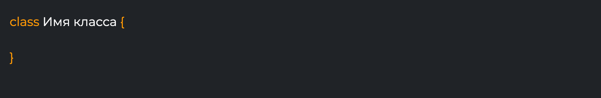После ключевого слова class мы прописываем название абстракции и фигурные скобки, в которых определяем структуру и поведение объектов, которые будут создаваться из него.
Чтобы создать абстрактного “пёсика”, мы можем определить класс Dog, в котором будут свойства, описывающие характеристики собаки. Например:
У абстрактной собаки есть имя, порода и длина хвоста.
Это только шаблон собаки, и на основе этого шаблона, мы можем создать конкретную собаку и делается это следующим образом:
Мы создаем свойство myDog и присваиваем ему объект класса Dog(). Это уже конкретная собака, которой можно задать свое имя, породу и длину хвоста.
myDog это ссылка на объект класса, а объект класса это буквально ячейка памяти, которая создается в тот момент когда вы обращаетесь к имени класса с круглыми скобками: Dog(). Это называется инициализацией класса.
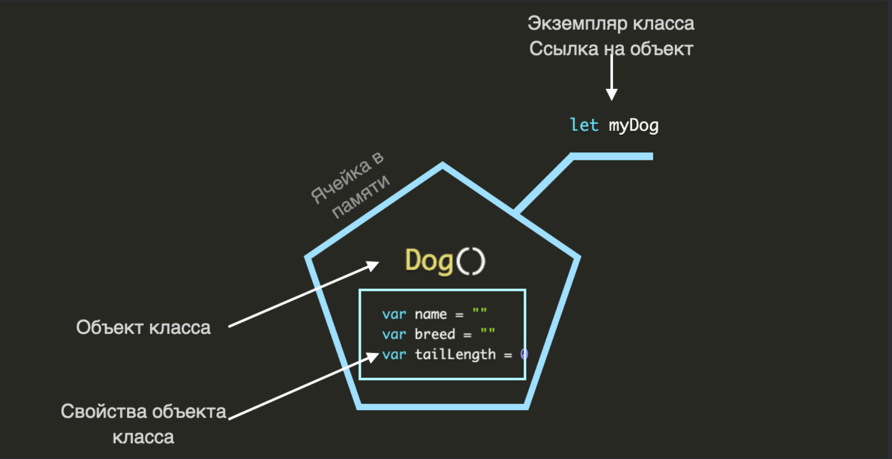Свойства класса.
Мы можем обращаться к свойствам внутри класса через его экземпляр следующим образом:
прописываем экземпляр класса и после ставим точку, это как тропинка к свойствам класса, они нам все доступны, и если вы запустите проект и посмотрите на правое окно, то вы увидите значения этих свойств:
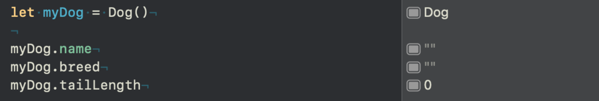Давайте нашему новому “пёселю” зададим имя, породу и длину хвоста:
Теперь у нас в памяти хранится собака со всеми характеристиками, то есть мы на основе шаблона Dog создали конкретную собаку:
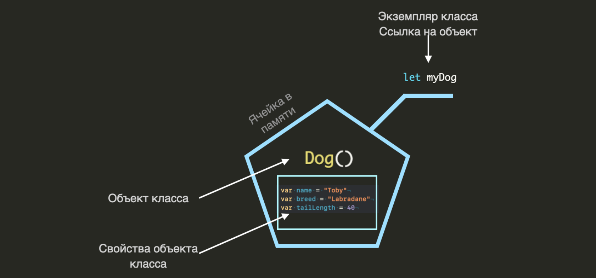И мы можем воспользоваться всеми этими свойствами в дальнейшей логике:
Если мы запустим компилятор, то на консоли увидим сообщение: “Имя собаки: Toby”.
На основе абстрактной конструкции мы можем создать любое количество экземпляров класса:
Это три конкретные собаки, которые пока имеют пустые поля (свойства внутри класса с пустыми значениями), кроме первого экземпляра, ему мы уже дали имя и породу. И если сейчас заглянем в память, то это будет выглядеть примерно следующим образом:
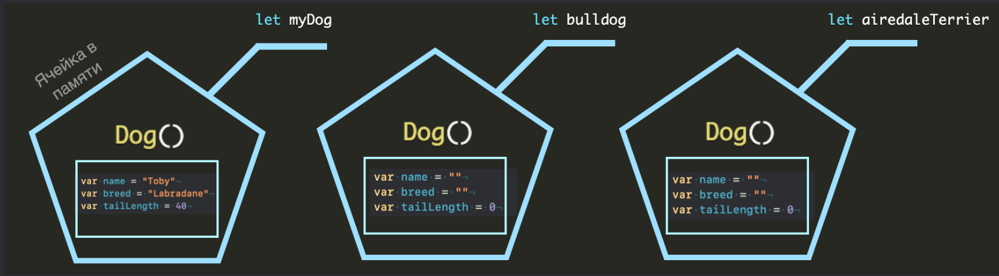Как вы наверно заметили само свойство является ссылкой на объект, а это значит, что если мы ее копируем, то копия будет ссылаться на тот же объект:
В памяти это выглядит примерно так:
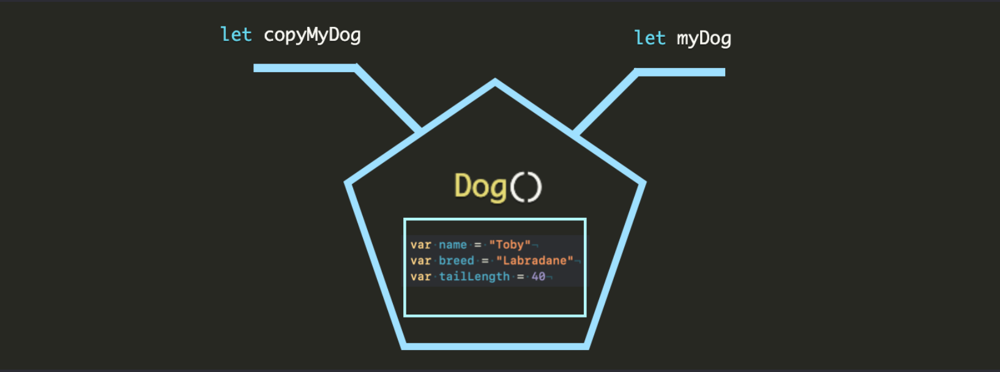Теперь два экземпляра класса ссылаются на один и тот же объект, и если мы меняем значения свойств у одного экземпляра, то эти изменения мы увидим и у второго:
Мы переопределяем имя Toby на Tobyus, и смотрим на значения свойств. Если запустить компилятор, то справа вы увидите абсолютно одинаковые значения свойства name у myDog и copyMyDog, хотя мы изменили значение имени только у экземпляра myDog. Это говорит о том что два экземпляра класса ссылаются на одну область в памяти.
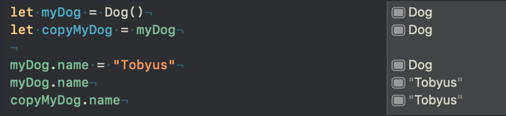Давайте подведем итог с терминами:
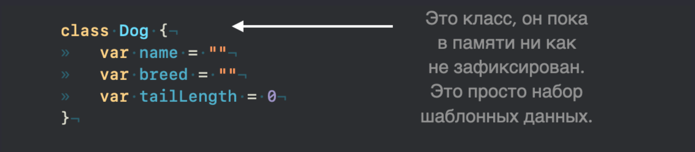Чтобы поместить его в память мы должны создать экземпляр класса:
Методы класса.
По мимо свойств в классе есть еще методы, по сути это функции, которые вы определите внутри класса.
Давайте создадим кнопку:
Это не сама кнопка, а только шаблон, на основе которого мы создадим конкретную кнопку. Какие характеристики есть у кнопки? Я думаю что это будет цвет, название, радиус скругления углов:
у нас есть шаблон, благодаря которому мы можем создать любое количество кнопок:
В данном случае у нас получится две, внешне абсолютно одинаковые, кнопки (потому что созданы от одного шаблона, у которого свойства имеют начальные значения), и мы можем поменять значения их внутренних свойств:
Теперь одна кнопка будет розовая, а вторая зеленая с заголовком “Green”.
Думаю со свойствами класса вам теперь более менее понятно. Теперь давайте подумаем над созданием метода. Как было уже сказано выше, метод это по сути функция, которая находится внутри объекта. И метод отражает какое то действие объекта. Какие действия могут быть у кнопки? Например кнопку можно нажимать:
метод pushTheButton будет отражать нажатие на кнопку, и как только мы его вызовем сработает print внутри метода.
Вызывать мы его будем в нужный момент из экземпляра этого класса:
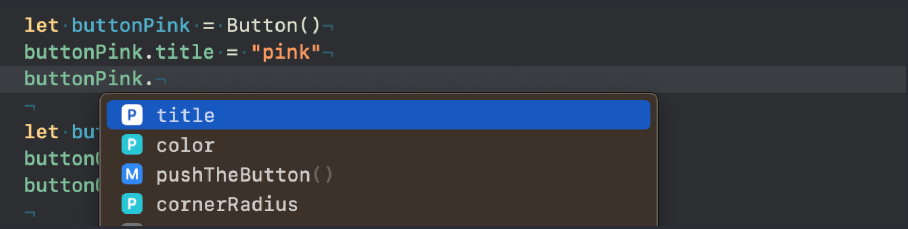Как вы можете видеть, достаточно поставить точку у экземпляра класса, что бы компилятор нам предложил список всех доступных элементов в классе, в том числе и метод pushTheButton:
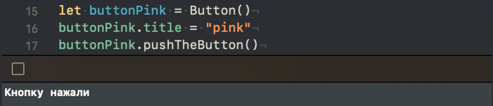Вы наверняка помните, что если поставить круглые скобки в конце функции, то она будет вызвана, поэтому мы видим на консоле сообщение “Кнопку нажали”.
Методов в классе может быть сколько угодно, давайте создадим еще один, который будет задавать значение для свойства title:
Что делает метод setTitle? Когда мы его вызовем, мы передадим в параметр значение, которое будет передано в свойство класса title. Его вызов будет выглядеть следующим образом:
Вызвав метод, мы переопределили свойство title на “PinkButton”. Мы можем убедится в этом обратившись к свойству title ниже:
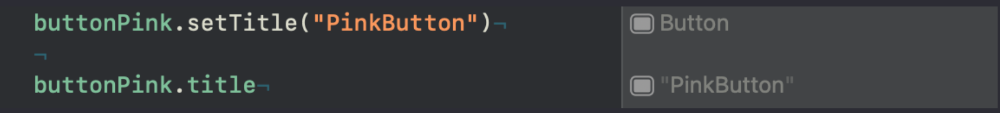Давайте посмотрим как этот объект смотрится в памяти:
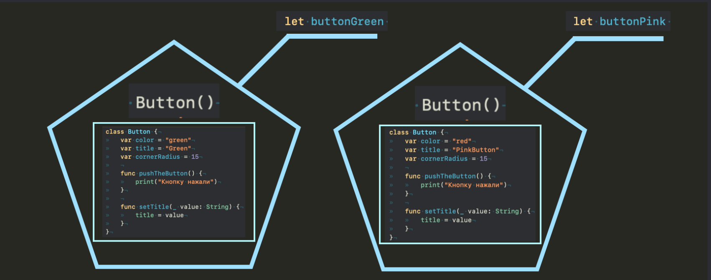
Внутри класса ко всем свойствам есть доступ на прямую и параметры для методов следует определять только в том случае если вы хотите данные передать через экземпляр класса, как в примере выше: buttonPink.setTitle(“PinkButton”)

Давайте в завершении этого урока создадим еще один метод, который будет задавать цвет для свойства color:
Метод setColor получает из параметра какой то цвет, и передает его в свойство класса color. Что такое self? – спросите вы. Это сам класс, то есть мы показываем что свойство color относится к классу, а свойство без self относится к параметру, так компилятору легче разобраться как использовать свойства с одинаковыми названиями.
Через этот метод мы можем задавать значение для цвета:
В реальной разработке, всё ваше приложение будет строится из подобных объектов, которые будут взаимодействовать друг с другом.
По сути создавая класс, вы создали новый тип данных, и его можно использовать в качестве типа данных, как обычные базовые типы:
То есть тип свойства buttonGreen будет Button, мы его обычно не прописываем явно. так же как и свойство buttonPink, тоже имеет тип Button. Это новый тип данных придуманный нами.
Давайте подведем итог.
Метод класса – это функция, которая находится внутри объекта, и связанна с этим объектом.
Метод класса – это по сути свойство, которое ссылается на объект класса, например: let buttonPink: Button
Объект класса – это инициализированный класс, например: Button()
Класс, является ссылочным типом данных.

Статичные свойства и методы.
Статические свойства – это свойства, которые принадлежат типу, а не экземпляру класса. В Swift статические свойства объявляются с помощью ключевого слова static
У нас есть класс Car, который в себе содержит статичное свойство. Из определения выше мы понимаем что это свойство нам не доступно из экземпляра класса и следующий код выдаст ошибку:
Статичное свойство принадлежит типу а не экземпляру, поэтому мы к нему должны обращаться через тип Car:
В отличие от экземплярных свойств, которые хранятся внутри каждого экземпляра класса статические свойства хранятся в единственном экземпляре, общем для всех экземпляров класса, которые используют это свойство.
Давайте обратимся к примеру, и сперва вспомним как работает экземпляр класса с обычным свойством:
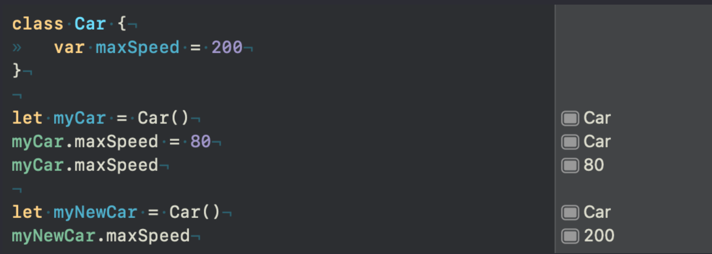Мы создали два экземпляра класса myCar и myNewCar, это две разные области в памяти и два разных объекта класса, и когда мы изменяем у myCar свойство maxSpeed, это ни как не влияет на свойство экземпляра myNewCar.
А вот если мы будем менять значение у статичного свойства, то эти изменения будут отражены везде где мы используем это свойство:
В классе Car метод printMaxSpeed будет отображать значение свойства maxSpeed.
Обратите внимание, что к свойству maxSpeed внутри класса, мы так же обращаемся через тип данных Car.
В первый вызов метода printMaxSpeed из экземпляра класса myCar выдал результат 200, после изменения значения свойства maxSpeed на 80, это изменение отразилось во всех экземплярах в том числе и myNewCar.
Та же самая история обстоит и с статичными методами. Вызвать такой метод мы можем только из типа данных и он будет общим для всех экземпляров класса, давайте немного изменим код:
Статические методы класса выполняются в контексте самого класса, а не конкретного экземпляра класса, и могут использоваться для выполнения операций, которые не зависят от конкретного экземпляра класса. Например, статический метод может использоваться для конвертации валюты, вычисления математических функций или получения доступа к общим данным.
Вы не можете внутри статичного метода использовать обычные свойства класса, только статичные, при этом к свойству можно обратиться на прямую: print(maxSpeed)